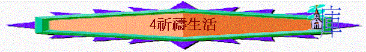
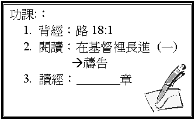

引言
何謂祈禱？
（詩5:3）
一．
祈禱的重要
禱告對我們有甚麼益處？
1.
得赦免
（代下 6:21）
2.
___________（腓4:6-7）
3.
___________（太26:41）
4.
___________（來4:16）
²
最近，有沒有經歷過以上的事情（祈禱後真得著益處）？
試分享
二．
祈禱的方式
1.
個人密室的私禱（太6:6）
A.
聖經教我們禱告時候要在甚麼地方，為甚麼？
有甚麼益處？
B.
你有沒有個人的「密室」？
2.
隨時隨地的默禱（尼2:4-8）
A.
尼希米是否在「密室」祈禱？
為甚麼？
B.
神有沒有聽？
快不快成就？
C.
最近有否「默禱天上的神」的經歷？
試分享
3.
眾人同心的公禱（太18:19-20）
三．
祈禱的內容
A.
陳明心意（詩5:3）
將你很想與神分享的事情告訴祂
B.
向神祈求（腓4:6）
ａ.
為自己祈求
ｂ.
為別人祈求
ｃ.
為世界祈求
C.
認罪求赦（代下
6:21）
D.
感謝讚美（腓4:6）
e.g.
今天仍有生命氣息，感謝神！
神聽了我祈禱，讚美祂！
²
在你平時的祈禱內容中，你最多禱告的內容是那一方面？
最少又是什麼？
四．
祈禱的心態
1. 要有信心 （太17:19-20）
2.
___________（約壹書5:14-15）
3.
___________（路18:1）
4.
___________（詩5:3）
²
在以上四方面，你認為自己學得最好是那一方面，最弱又是那方面？
四課
祈禱生活
總結：你在祈禱生活中有甚麼立志？
